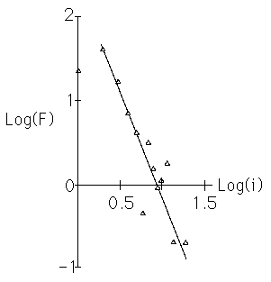

| Ths Hsus sought to establish scaling relations |
| f = c⋅i-D |
| between the frequency f of the interval i between successive notes of a musical composition. |
| For each interval i they plotted Log(f) vs Log(i) and sought a linear trend in the graph. |
| For most compositions, the range of intervals is small, certainly
|
| Moreover, within this data lie some expected deviations. |
| For example, the diminished fifth (i = 6) generally is regarded as dissonant and so appears with lower frequency. |
| Within this range, they obtained reasonably linear plots for compostions of Bach and Mozart, less so for Stockhausen. |
| Here is their plot for BWV 772 of Bach. |
|  |
Return to Kenneth and Andrew Hsu.